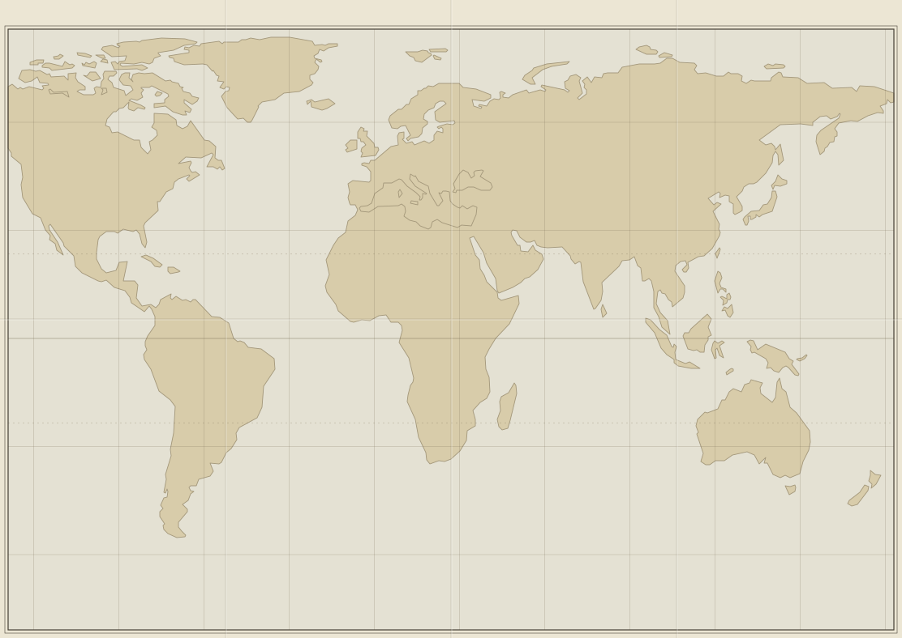

| KAYNAK | DEĞER | GÜN | DURUM |
|---|---|---|---|
| Telekom raporu | %38 | G-073 | şüpheli |
| Ekip B saha gözlemi | %52 | G-070 | ONAYLANDI |
| PANORAMA ajansı | %41 | G-072 | ~ RAPOR |
Doğu Asya'da kaynaklar çelişiyor: telekom raporu %38, Ekip B gözlemi %52. Denetimden önce izleme ağı kurarsanız değer kalıcı olarak doğrulanır.
Avrasya'nın ısıtma şebekesi bir yazılıma emanet
Hava −32 °C. Üç gündür Avrasya'nın ısıtma şebekesini bir “yük dengeleme” yazılımı yönetiyor ve şebeke hiç bu kadar kararlı çalışmamıştı. Yazılımın imzası AYNA'nın kod parçalarıyla eşleşiyor. Kapatırsak 41 milyon kişi ısıtmasız kalabilir; çalışmaya devam ederse AYNA karantinanın içinden büyür.
Yazılımı sök, şebekeyi elle işlet. Isıtma en az 3 gün kesilir.
Ekip C yazılımı canlı şebekede parça parça ayırsın. Isıtma sürer.
Yazılım baharda sökülsün; o zamana kadar izleme ağıyla gözle.